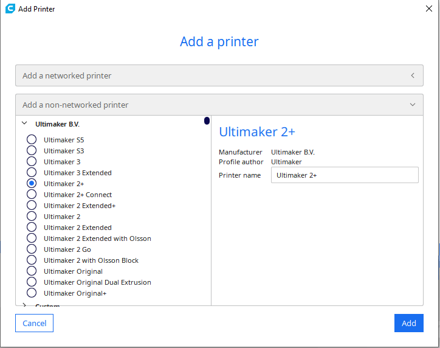
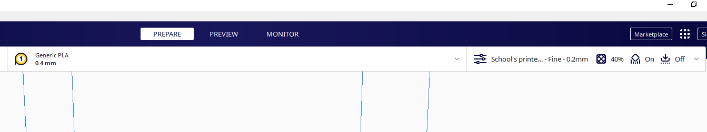
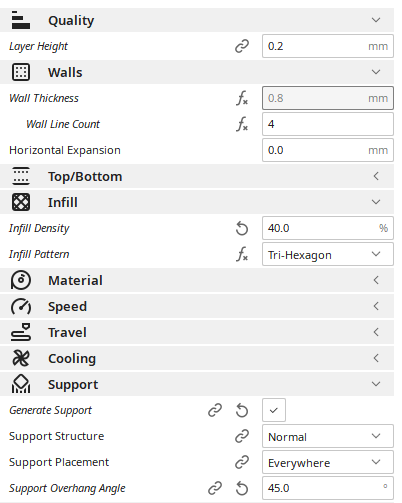
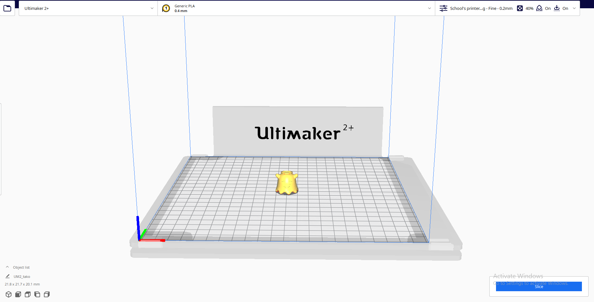
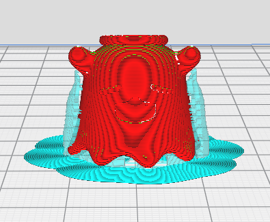
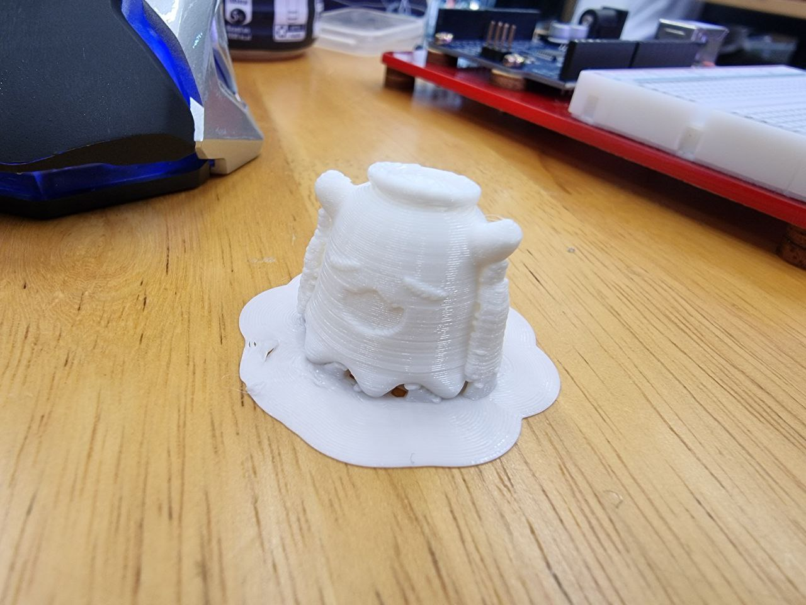
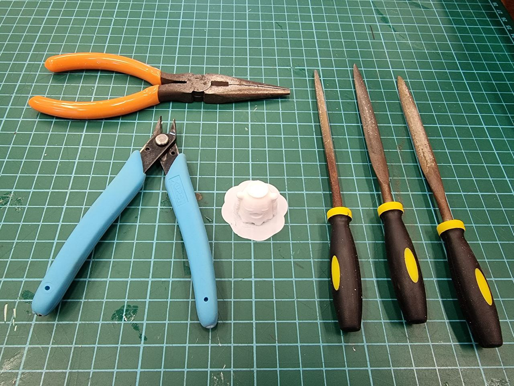
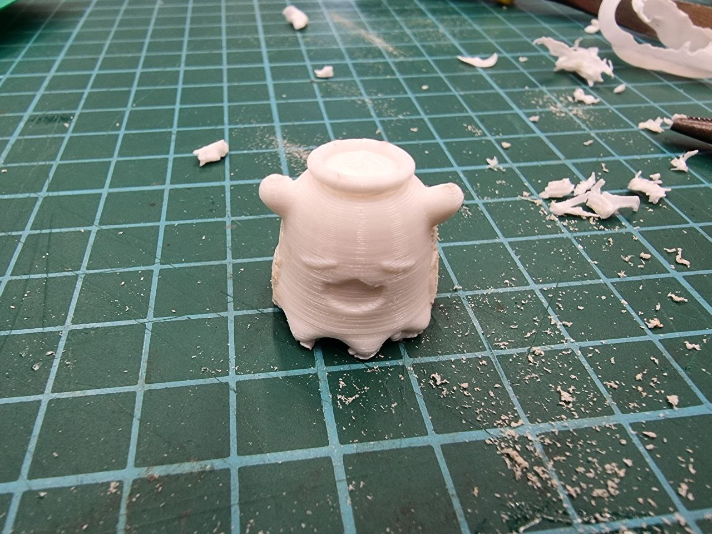
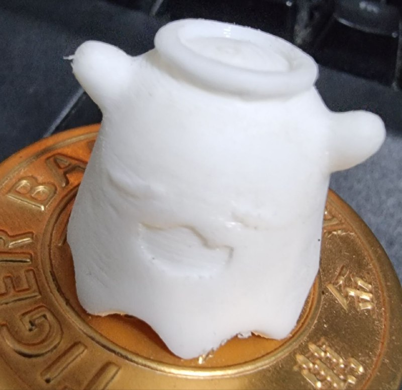

Additive manufacturing
Additive manufacturing (AM) is defined as joining material to make object from 3D model data, usually layers upon layer as opposed to subtractive.
AM allows conformal cooling channels, functional complexity and consolidate designs to be printed while allowing integration of parts to reduce assembly cost and time.
AM benefits includes:
AM drawbacks includes:
- Shape complexity
- Weight reduction
- Material complexity
- Poor mechanical properties
- Slow Printing
- Material limitation
| AM benefits includes: | AM drawbacks includes: |
|---|---|
|
|
Before you start designing a model for 3d printing, there are some important things we must take note of to get a proper print.
In my case I know that the piece would be printed via material extrusion.
Things to take note of when designing a part for 3d printing:
- Wall thickness to have a min of 1mm (any thinner and the part would be too fragile)
- supports are required for parts with 45 degree overhang.
- any engraving to have a min of 1mm width and 0.3 depth.
- engraving is preferred over embossed.
- any features to have a min of 2mm.
- minimize the Z axis(height) and support structure to reduce the manufacturing cost.
3D printing and clean up(WIP)
The software I am using to 3D print is Cura, click here to download the software
The model I am using for this is made by Takodachi from thingiverse, click here to get the same STL file.
Setting up your software

Select Ultimaker 2+ under non-networked printer as this is the printer we will be using for EP1000.

Select PLA as your material and the nozzle size of 0.4mm.

Under print settings go to custom and use the following settings(or use your own). Use brim as your build plate adhesion
Now Drag your STL file over into cura. The Model should be place on the center automatically. Click slice at the bottom right.
The software would calculate an estimated printing time as well as the material needed for the print.

When clicking preview, the software will show you the supports and model
After you preview and make any other adjestments(slice again), Save it as Gcode into a SD card.
|  |  |
|---|---|
The model would take less than 30mins to print, please ensure the first layer sticks to the buildplate.
Prepare sand-paper, small files, and needle nose plyers(see photo) to remove the supports from the model. For smaller models, it's recommanded to use a dremel
(For the sake of proving it can be done, I would only be using basic tools.)
|  |  |
|---|---|